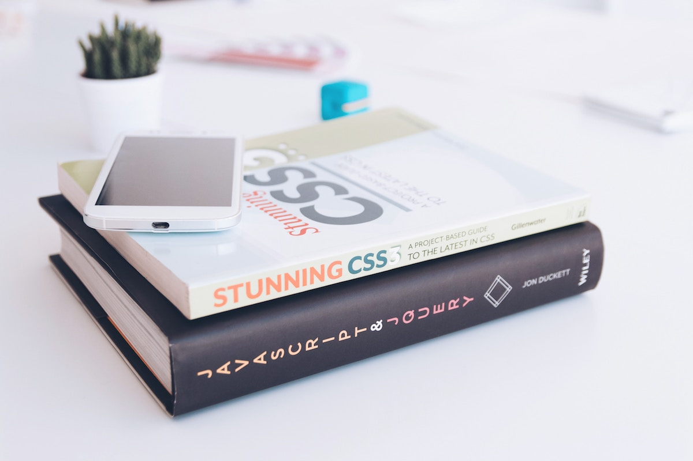

Задание
Сделай форк данного проекта на github.com, склонируй форк на свой компьютер, внеси изменения – добавь себя в список контрибьютеров ниже, закоммить изменения в форк, создай из форка pull request в совновной репозиторий.
Контрибьютеры
- Имя Фамилия (никнейм)